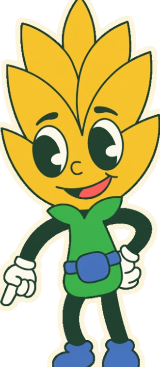
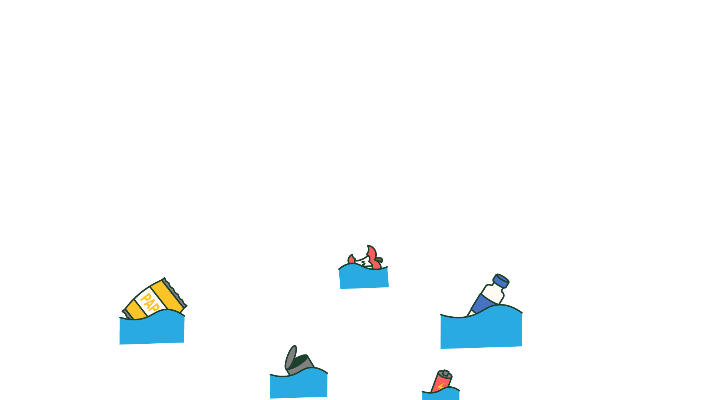

TU GUARDIÁN
Tu guardián verde cerca a ti

Continuar
Continuar
Evitan malos olores y la presencia de plagas.
Se pueden transformar en abono que mejora el suelo y evita que nutrientes y materia lleguen al agua.
Hacen que la basura desaparezca de inmediato.
A
B
C
Continuar
Reduce la cantidad de material que llega al relleno sanitario y evita que esos materiales obstruyan canales o contaminen el agua.
Evita que huelan mal al acumularse en zonas críticas.
Ocupa menos espacio en la casa
A
B
C
50
s
0
/
0
Continuar
Contaminan los materiales reciclables, impidiendo que se recuperen y obligando a enviar todo al relleno.
Se convierten en abono rápidamente al descomponerse más fácilmente por los plásticos.
No afectan a los materiales reciclables, se puede recuperar y separar de los aprovechables
A
B
C
Liberan sustancias tóxicas que pueden contaminar el agua, afectar la fauna y poner en riesgo la salud humana.
Se dejan de fácil acceso para cualquiera que vaya y los tome sin conocer el daño que puede causar.
Se degradan rápido al estar en el medio ambiente sin causar mayor daño.
A
B
C
Reiniciar historia
Reiniciar historia